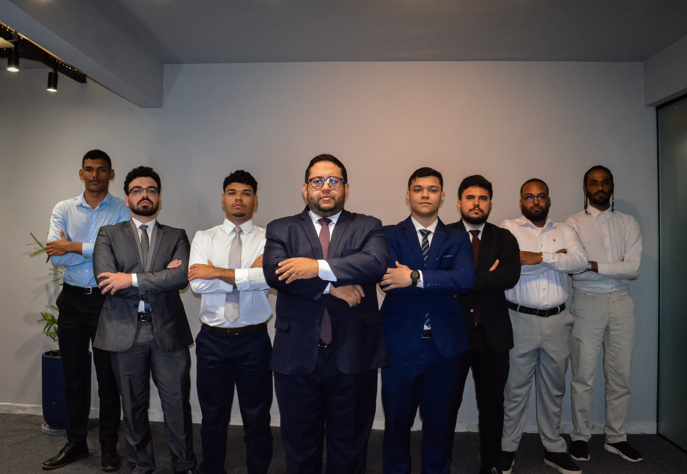
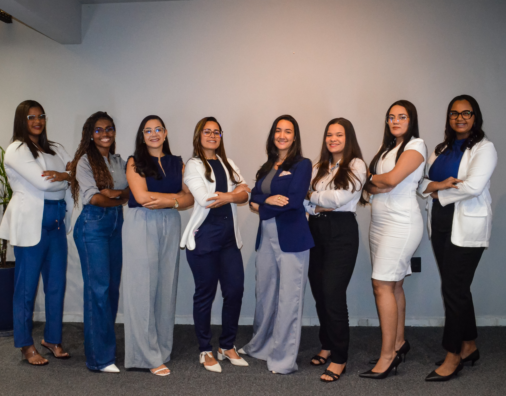

Edmilson Alves Silva JuniorSócio fundadorConhecer atuação ↗
Advocacia & Compliance · Pernambuco
Orientação jurídica para empresas e pessoas.
Atuação consultiva e contenciosa, com serviços empresariais, estratégicos, trabalhistas, cíveis, condominiais, previdenciários, imobiliários, sucessórios e de compliance.
Ver áreas de atuação ↓
01 / Escritório
Sociedade registrada na OAB/PE sob o número 3.332.
A EA informa atuação preventiva, consultiva e contenciosa para pessoas jurídicas e físicas. O escritório foi fundado em 2014 e mantém unidades no Recife e em Petrolina.
RecifeR. Irmã Maria David, 67
Conj. 201/205 · Casa Forte
PetrolinaR. Joaquim Nabuco, 541
Sala 1308 · Centro
02 / Atuação
As áreas continuam no site. A navegação fica mais clara.
Empresarial +
Contratos, fusões e aquisições, recuperação judicial, falências, governança, direito societário e reestruturação.
Estratégica +
Consultoria preventiva, análise de riscos, planejamento tributário, due diligence, mediação, arbitragem e licitações.
Trabalhista +
Relações de trabalho, acordos coletivos, verbas, assédio, acidentes e consultoria trabalhista.
Cível e trânsito +
Contratos, responsabilidade civil, consumidor, cobrança, seguros, direito médico e processos de trânsito.
Condominial +
Convenções, assembleias, multas, obras, inadimplência, conflitos e regularização.
Previdenciária +
Aposentadorias, pensão, auxílio-doença, BPC, revisão de benefícios e recursos administrativos.
Imobiliária +
Compra, venda, locação, usucapião, regularização, incorporação, financiamento e direito de vizinhança.
Sucessória +
Inventários, testamento, herança, partilha, doação, planejamento sucessório e família.
Compliance +
Programa de integridade, LGPD, anticorrupção, auditoria, treinamentos, políticas, investigação e due diligence.
03 / Equipe
Profissionais apresentados pelo escritório.
A página preserva a equipe existente e cria espaço para perfis individuais, formação, atuação e conteúdo de cada profissional.

04 / EA Educação
Conteúdo jurídico ligado às áreas de atuação.
O projeto EA Educação permanece na arquitetura. Artigos, seminários e materiais podem apoiar páginas específicas e responder dúvidas frequentes de forma informativa.
05 / Contato
Escolha o assunto antes de iniciar a conversa.
O formulário demonstrativo preserva a área selecionada. Nenhuma informação é enviada.
+55 (81) 99219-6293Segunda a sexta · 08h às 18h